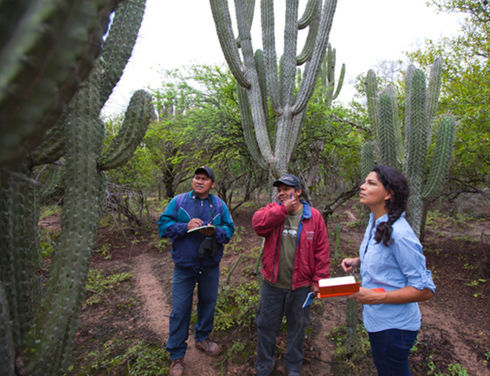
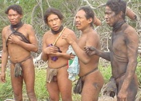
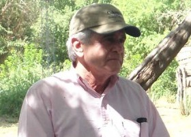
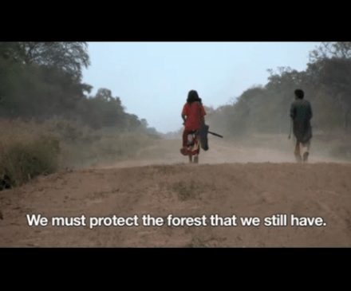
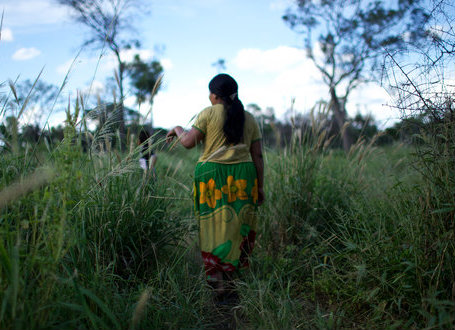

Historias de “Monitoreo Deforestación“
-
-
El Gran Chaco afectado por deforestación de igual velocidad que la Amazonia
-
Agua para el Gran Chaco
-
 Narcotráfico, otra amenaza al Gran Chaco
-
 Mayor tasa de deforestación del mundo es en la tierra de una tribu no contactada
-
 Ganadero desprecia petición para que deje de destruir el bosque
-
 Una secta cristiana amenaza al boque paraguayo
-
 Regiones vastas del Chaco en Paraguay están siendo reemplazadas por ranchos